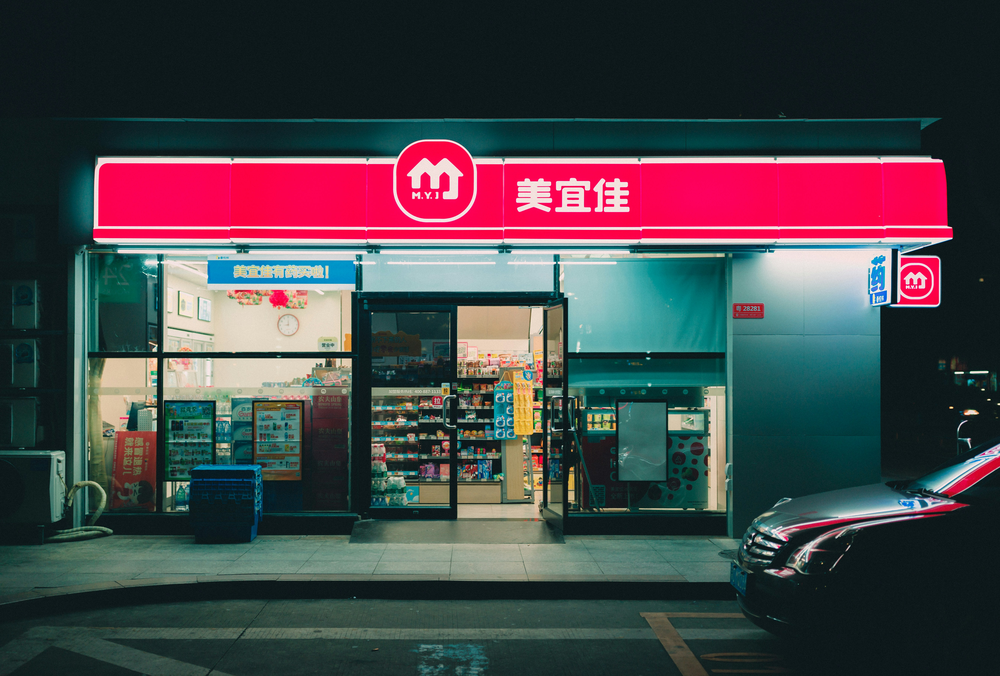

convenience store



Convenience store adalah toko ritel kecil yang menyediakan berbagai produk kebutuhan sehari-hari, seperti makanan, minuman, dan kebutuhan pokok lainnya, dengan jam operasional yang panjang dan lokasi yang strategis. Ciri utamanya adalah kemudahan akses dan kecepatan transaksi, dengan banyak yang juga menyediakan area duduk untuk konsumsi di tempat dan bahkan buka 24 jam. Contohnya di Indonesia adalah Indomaret, Alfamart, FamilyMart, dan Circle K.
Berbagai convenience store dari beberapa negara
| No. | Asal Negara | Nama convenience store |
|---|---|---|
| 1. | Indonesia | Indomaret |
| 2. | Indonesia | Alfamart |
| 3. | Amerika Serikat | 7-Eleven |
| 4. | Jepang | FamilyMart |
| 5. | Jepang | Lawson |